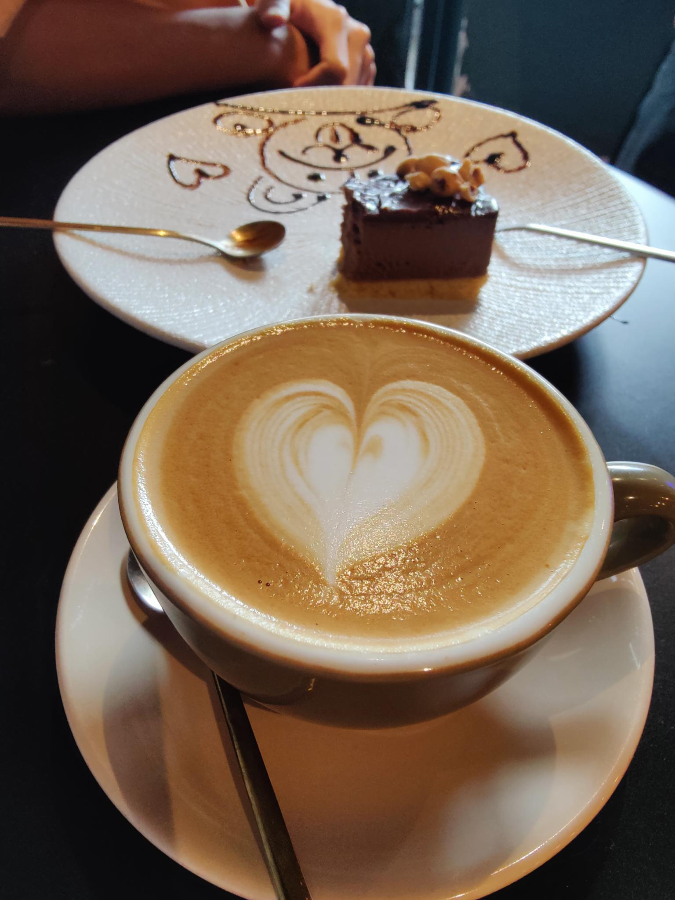

Hi, thanks for reading this.
I have a lot of nice photos, however sharing them on the Instagram is not to my liking. I disagree how people only share about good things in there life, and hide bad things or the boring day-to-day life. I feel peculiar to share tiny trivial things on the platform mentioned.
Update frequency: depends on availability.
Writing occasion: laptop and soft jazz music ready, best if there is a cup of hot coffee